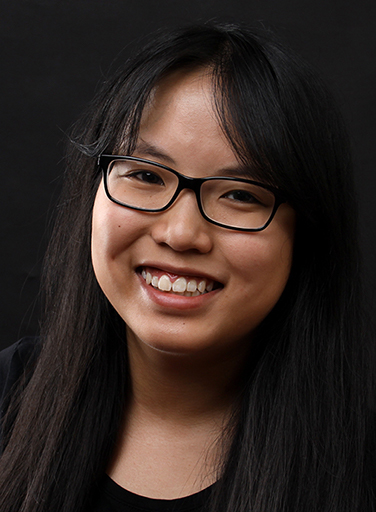

Kurze Infos über mich
| Name: | Monika Ho |
| Alter: | 21 Jahre |
| Geburtstag: | 29. November |
| Wohnort: | Albstadt |
| Zweitwohnsitz: | Furtwangen |
| Nationalität: | Vietnam |
| Hobbies: | Kochen, Werken bzw. DIYs |
| Interessen: | Kulturen, Architektur, Meditation |
Mein Abitur habe ich am Technisches Gymnasium in Balingen absolviert. Damals habe ich das Fach Gestaltung und Medientechnik belegt und konnte dadurch grundlegenden Kenntnisse im Print und Web sammeln. Nun studiere ich an der Hochschule Furtwangen, Online Medien und bin aktuell im 2. Semester. Mir gefällt es hier sehr gut und man lernt viele nette Kommilitonen und Dozenten kennen. ^^